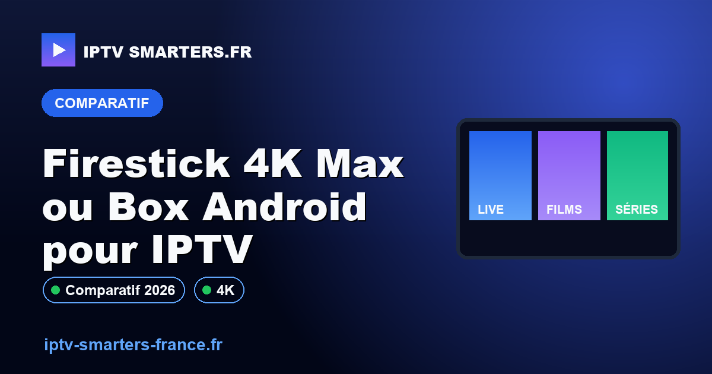

Firestick 4K Max ou Box Android pour IPTV

C'est la question que reçoit le plus notre support : faut-il un Amazon Fire TV Stick ou une box Android TV pour lire un abonnement IPTV sans coupure ? La réponse honnête, c'est que les deux fonctionnent — mais ils ne s'adressent pas au même profil d'utilisateur. Ce comparatif tranche selon des critères concrets : puissance réelle, connectique, applications disponibles et stabilité du flux en 4K. Si vous découvrez la technologie, lisez d'abord c'est quoi l'IPTV avant de choisir votre matériel.
Comparatif technique détaillé
Voici les différences qui pèsent réellement sur l'expérience IPTV, au-delà du prix affiché. Les valeurs ci-dessous correspondent aux modèles les plus courants en 2026 (Fire TV Stick 4K Max 2ᵉ génération face à une box Android TV / Google TV milieu de gamme).
| Critère | Fire TV Stick 4K Max | Box Android TV milieu de gamme |
|---|---|---|
| Format | Clé HDMI compacte | Boîtier posé près de la TV |
| Processeur | Quad-core 2,0 GHz | Quad-core 1,8–2,0 GHz |
| Mémoire vive | 2 Go | 3 à 4 Go |
| Stockage | 16 Go | 32 à 64 Go |
| Connexion réseau | Wi-Fi 6 (Ethernet via adaptateur) | Wi-Fi + Ethernet natif |
| Codecs vidéo | H.265/HEVC, AV1, VP9 | H.265/HEVC, VP9 (AV1 selon modèle) |
| Système | Fire OS (store Amazon) | Android TV / Google TV (Play Store complet) |
| Applications IPTV | IPTV Smarters, sideload possible | IPTV Smarters, TiviMate, IBO Player… |
| Sortie 4K HDR | 4K à 60 Hz, Dolby Vision/HDR10+ | 4K à 60 Hz selon modèle |
| Budget indicatif | Entrée de gamme | 1,5 à 3× le prix d'un Firestick |
Amazon Fire TV Stick 4K Max : pour qui ?
Le Firestick gagne sur trois points : le prix, la simplicité (il se branche directement dans le port HDMI, sans câble ni boîtier qui traîne) et l'intégration logicielle propre. Il fait tourner sans effort l'application IPTV Smarters et décode le 4K HDR sans saccade tant que le réseau suit.
Ses limites : Fire OS reste un système verrouillé. L'installation d'applications hors store passe par le « sideload » (activation du mode développeur), et surtout il n'a pas de port Ethernet d'origine — il faut l'adaptateur Ethernet officiel d'Amazon, indispensable pour un usage sérieux du sport en direct. Pour aller plus loin sur ce modèle, consultez notre guide IPTV sur Firestick 4K.
Box Android TV / Google TV : pour qui ?
La box s'adresse à l'utilisateur qui veut le contrôle. L'accès complet au Play Store ouvre la porte à TiviMate, IBO Player et aux lecteurs avancés, avec gestion fine de l'EPG, des favoris et du replay. La présence d'un port Ethernet natif est son vrai atout : branché en filaire, le flux 4K devient nettement plus régulier en heure de pointe.
Ses inconvénients : un prix plus élevé, un boîtier supplémentaire à alimenter, et une qualité très variable selon les marques. Une box « no-name » sous-dotée en RAM peut ramer davantage qu'un Firestick. Privilégiez un modèle certifié Google TV avec au moins 3 Go de RAM.
Quel appareil selon votre profil
- Petit budget / premier essai : Fire TV Stick 4K Max, sans hésiter.
- Fan de sport en 4K : box Android avec Ethernet natif, ou Firestick + adaptateur Ethernet — voir aussi comment garder un flux stable les soirs de match.
- Utilisateur avancé (TiviMate, multi-listes) : box Android TV pour la liberté du Play Store.
- Setup minimaliste / TV secondaire : Firestick, pour sa discrétion derrière l'écran.
Le facteur vraiment décisif : le réseau
Dans 9 cas de coupure sur 10, le problème ne vient ni du Firestick ni de la box, mais du réseau. Quel que soit l'appareil :
- Visez un débit réel d'au moins 15 Mbps pour la 4K, mesuré directement sur l'appareil de lecture, pas sur votre PC.
- Préférez l'Ethernet au Wi-Fi pour le direct, surtout le sport.
- Évitez le Wi-Fi 2,4 GHz saturé : restez sur la bande 5 GHz.
Si vous constatez des micro-coupures, notre guide dédié pour résoudre le buffering IPTV détaille les réglages DNS et réseau à appliquer avant de changer de matériel.
Pièges de configuration propres à chaque appareil
| Appareil | Piège fréquent | Correctif |
|---|---|---|
| Firestick | Application IPTV introuvable dans le store | Activer « Applications de sources inconnues » puis sideload via Downloader |
| Firestick | Coupures en soirée sur le sport | Ajouter l'adaptateur Ethernet officiel Amazon |
| Box Android | Interface qui rame, applis lentes | Choisir un modèle ≥ 3 Go de RAM, certifié Google TV |
| Les deux | Image qui gèle après quelques minutes | Vérifier le débit réel et passer en Ethernet — voir IPTV en panne |
Cadre légal en France
Le choix du matériel n'exonère de rien sur le plan juridique. Un Firestick comme une box Android sont de simples lecteurs : la responsabilité porte sur la source du flux et vos droits d'accès aux contenus. Assurez-vous d'utiliser un service disposant des autorisations nécessaires. Notre page IPTV et légalité en France fait le point sur ce cadre.
FAQ
Le Firestick 4K Max est-il assez puissant pour l'IPTV en 4K ?
Oui. Avec son processeur quad-core 2 GHz, ses 2 Go de RAM et le décodage matériel H.265/AV1, il gère sans problème la quasi-totalité des flux 4K autour de 25 Mbps. Le facteur limitant reste le réseau et le serveur source, pas l'appareil.
Une box Android TV est-elle vraiment meilleure qu'un Firestick ?
Pas systématiquement. Elle apporte l'Ethernet natif, plus de mémoire et l'accès complet au Play Store. Mais un Firestick relié en Ethernet offre une stabilité comparable pour moins cher. La box se justifie surtout pour un usage intensif ou multi-applications.
Wi-Fi ou Ethernet pour un flux stable ?
L'Ethernet, presque toujours, en particulier pour le sport en direct. Il supprime les micro-coupures dues aux interférences. Comptez au moins 15 Mbps réels sur l'appareil de lecture pour de la 4K confortable.
Quel appareil avec un petit budget ?
Le Fire TV Stick 4K Max : meilleur rapport qualité-prix, souvent en promotion, et parfaitement compatible avec IPTV Smarters Pro. La box devient pertinente au-dessus de ce budget si vous voulez de l'Ethernet sans adaptateur.